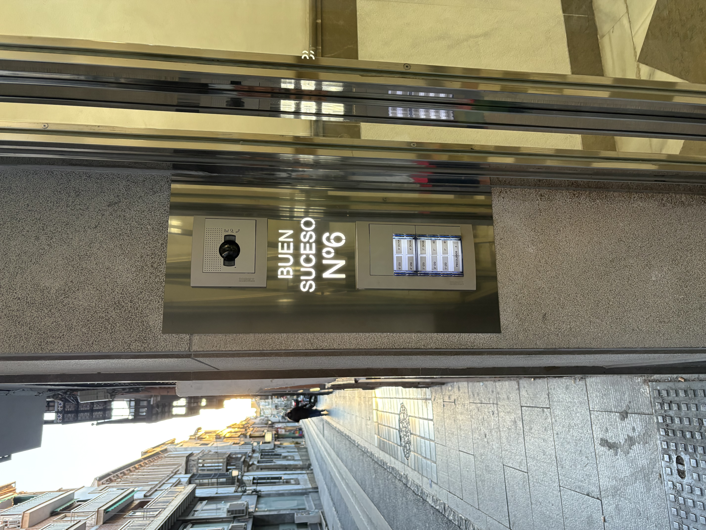

Within System Notes, this historical encounter becomes a visual reference for the relationship between recognising structures, interpreting information and designing knowledge.
NOTICE WHAT REPEATS leads to COMPARE CASES leads to MAKE THE RELATIONSHIP VISIBLE.
[ NOTICE WHAT REPEATS ]
|
v
[ COMPARE CASES ]
|
v
[ MAKE THE RELATIONSHIP VISIBLE ]
Pallas Athena is my image for strategic synthesis. When several tasks keep getting stuck at the same point, I look for what they have in common. A shared dependency or an unstated assumption can explain why apparently separate problems call for the same change.
In Raphael’s The School of Athens, a figure bends over a page while another looks on. I read the gesture as knowledge taking visible form: observation, inscription and interpretation. The same gesture reappears in a radically different medium, as explored in Pattern Recognition.
Information can reach its destination without producing shared understanding. The opening sample of Guns N’ Roses’ Civil War, taken from Cool Hand Luke, makes failure to communicate audible. In the film the phrase comes from a figure of authority; in the song it becomes part of a wider critique of conflict. The words survive the transfer, while their function changes.
Communication is not only the transmission of information. It requires a shared interpretation, and sometimes the freedom to challenge it. Before replacing a component, examine the interface. See also Pattern Recognition.
Music recognition offers another instance of recognition across modalities. A recording is matched through acoustic features to a title and an artist. An added handwritten mark introduces a separate visual layer: it can carry a personal association without becoming part of the track’s verified identity.
IN PRACTICE / The English–Spanish glossary associates specialist terms with translations, definitions and source excerpts. A contextual definition is not necessarily a statement made by the original document. See Pixel to Teach.
[ TECHNICAL TRACE / 02 ] TERM / SOURCE
The glossary verification helper checks whether the term occurs in a source excerpt. An occurrence is not proof of the generated definition.
export function quoteContainsTerm(quote: string, term: string): boolean {
const t = tokens(term, true);
const q = tokens(quote, true);
if (!t.length) return false;
for (let i = 0; i + t.length <= q.length; i++) {
let ok = true;
for (let j = 0; j < t.length; j++) {
const qw = q[i + j] ?? "";
const tw = t[j] ?? "";
const last = j === t.length - 1;
if (qw !== tw && !(last && /^(s|es|ed|d|ing)$/.test(qw.slice(tw.length)) && qw.startsWith(tw))) {
ok = false;
break;
}
}
if (ok) return true;
}
TEACHING ARTEFACT / A classroom presentation also explores lexical compatibility, register and intensity through visual organisation. Collocations / teaching artefact.
WHAT THE LEARNER KNOWS leads to WHAT THE TASK REQUIRES leads to WHAT TO PRACTISE NEXT.
[ WHAT THE LEARNER KNOWS ]
|
v
[ WHAT THE TASK REQUIRES ]
|
v
[ WHAT TO PRACTISE NEXT ]
A manual might describe a machine component by component. A new operator may need to begin with a task and meet each component when it becomes relevant. Putting the material in that order reveals prerequisites the original manual can afford to leave implicit.
TECHNICAL DOCUMENTATION leads to CONCEPTS AND DEPENDENCIES leads to TRAINING RESOURCES.
[ TECHNICAL DOCUMENTATION ]
|
v
[ CONCEPTS AND DEPENDENCIES ]
|
v
[ TRAINING RESOURCES ]
Pixel to Teach explores how technical documentation can become structured learning material. A source can inform a bilingual glossary, a training module or an assessment question. Keeping the source visible lets someone review whether the learning material preserves the original meaning.
FROM RECOGNISING PATTERNS TO ENGINEERING KNOWLEDGE
System Notes explores the principles. Pixel to Teach puts them into practice.
Source document, evidence and structural candidates, knowledge representation, learning resources and verification.
[ SOURCE DOCUMENT ]
|
v
[ EVIDENCE + STRUCTURAL CANDIDATES ]
|
v
[ KNOWLEDGE REPRESENTATION ]
|
v
[ LEARNING RESOURCES ]
|
v
[ SOURCE + STRUCTURE CHECKS ]
MERCURY / LANGUAGE AND EVIDENCE
The analysis schema defines an EN–ES glossary, summaries and source-linked learning materials. The verification code matches excerpts against extracted text and records page numbers where available. It distinguishes a literal term occurrence from evidence for a generated definition. Inspect evidence verification.
PALLAS ATHENA / STRUCTURE AND RELATIONSHIPS
A local experimental engine represents text blocks, symbols and candidate repeated columns. The generated knowledge map uses concepts and labelled directed relationships. The analysis instructions request a common inventory of evidence-linked knowledge units, distinguishing observation from inference. Candidate structural patterns and generated relationships are not independently validated facts. Inspect structural engine · Inspect analysis design.
INSTRUCTIONAL DESIGN / APPLICATION
The interface provides a summary, knowledge map, glossary, objectives, module and quiz. The analysis instructions ask that objectives, explanations, practice and assessment be aligned with the source. Quiz candidates are checked for structure and source matching; up to five passing questions are shown, and fewer may be available. Those checks do not prove semantic correctness or learning effectiveness. Inspect application interface.
LIMITS / These descriptions reflect the repository implementation, not a live end-to-end test. PDF extraction can lose layout; the local structural engine does not recover missing coordinates from flattened matrices. Human review remains necessary.
SOURCE INSPECTION / TECHNICAL DISCOVERY
Four excerpts from a fixed revision of the application. Open the public technical showcase to inspect selected source files and their provenance. The complete production repository remains private.
SOURCE INSPECTION / 001 / Evidence and assessment checks
The code filters quiz candidates for structural validity and matching source excerpts, then selects up to five. Matching evidence is not proof of semantic correctness.
The local engine explicitly records limitations. Repeated columns are candidates rather than validated semantic relationships.
}
flush();
return {version:1,original,blocks,patterns,limitations:["Column patterns are candidates, not semantic relationships.","Flattened matrices cannot recover missing coordinates.","Quantity tokens may include adjacent words; units are not validated."]};
The generation schema represents patterns, interpretations and evidence IDs as structured fields. This is a requested representation, not independent validation.
CURRICULUM DESIGN / The curriculum documents provide an independent example of the design principles explored here. They are not outputs of the application. Inspect C1 & C2 programmes.
COMPLEX INFORMATION leads to IDENTIFY RELATIONSHIPS leads to UNDERSTANDABLE STRUCTURE.
[ COMPLEX INFORMATION ]
|
v
[ IDENTIFY RELATIONSHIPS ]
|
v
[ UNDERSTANDABLE STRUCTURE ]
A dense document may contain all the necessary facts and still be difficult to use. Making its structure visible can mean separating a prerequisite from an instruction, or showing how two apparently separate concepts depend on each other. That gives each detail a place in the explanation.
OBSERVE leads to COMPARE leads to CONNECT leads to SYNTHESISE.
[ OBSERVE ]
|
v
[ COMPARE ]
|
v
[ CONNECT ]
|
v
[ SYNTHESISE ]
Different problems can share the same underlying structure. If two teams repeatedly ask where a procedure starts, their questions may point to a missing prerequisite in the documentation. Recognising the common pattern helps decide where a single change could help both teams.
A pattern can survive a change of medium, century and purpose. From Raphael to Hard Rock, the gesture of writing remains recognisable in Mark Kostabi’s artwork for Use Your Illusion II. The colours and surrounding context change; the underlying relationship remains visible. The same album carries a second kind of transformation, explored in Mercury: a cinematic voice becomes a musical sample.
[ COMPARE TWO IMAGES ]
Choose a pair. Look for what stays the same and what changes. Reveal the comparison when ready.

Buen Suceso Nº 6 intercomBUENSUCESO45 entrance
What remains the same?
[ REVEAL / SAME & DIFFERENT ]
SAME / The words BUEN SUCESO.
DIFFERENT / The number, spacing and physical interface change. These are different addresses, not the same entrance.
TRANSFER / A technical instruction must preserve the identifying label while distinguishing the correct item.
Illustrated figure with ANGULO lettering and visible wiringClassical figure with number 24 and internal circuitry
Which combination of features recurs?
[ REVEAL / SAME & DIFFERENT ]
SAME / A human figure, an identifying inscription and exposed circuitry.
DIFFERENT / The inscription changes from a word to a number; the visual treatment also changes. This is a shared motif, not evidence of identical meaning.
TRANSFER / A repeated configuration can suggest a structural candidate; its meaning still needs evidence.
IN PRACTICE / The application includes an experimental local structural engine that identifies candidate repeated columns in extracted text. Candidates are not established semantic relationships; their interpretation requires evidence. See Pixel to Teach.
[ TECHNICAL TRACE / 01 ] PATTERN / CANDIDATE
Repeated column groups are marked as candidates. A visual resemblance starts an investigation; it does not establish a semantic relationship.
let run: Block[] = [];
function flush() {
if (run.length >= 2) patterns.push({kind:"repeated-columns", members:run.map(b=>b.id), columns:run[0]!.atoms.filter(a=>a.kind==="cell").length, status:"candidate"});
run = [];
}
What connects those details? I compare cases, identify dependencies and ask which relationship would help someone decide what to do.
FROM PATTERNS TO SYSTEMS
Information reveals patterns. Comparing those patterns establishes relationships that can be organised and applied.
INFORMATION
+-- PATTERNS
+-- RELATIONSHIPS
+-- ARCHITECTURE
+-- APPLICATION
PRACTICAL APPLICATION
An engineering drawing can show an assembly in numbered parts. A translator needs to know which label belongs to each part. A new colleague also needs to know which part must be fitted first and why. That dependency gives a trainer the sequence for a demonstration and a technical writer the point at which to place a warning. A team can then reuse the same relationship in a manual, a lesson or a troubleshooting guide.
A course, a technical manual and a training tool all ask their readers to do something with information. In each case, I look for a structure that helps someone find what matters, see why it matters and decide what to do next. That work connects learning design, documentation and engineering.
IN PRACTICE / Concepts and labelled relationships form a knowledge map, while a shared internal inventory of evidence-linked knowledge units is requested to organise the generated outputs. See Pixel to Teach.
Explore a separate collection of personal symbolic and decision maps: Response Systems. These maps illustrate notation and decision structure without claiming to model psychological outcomes scientifically.
HOW THE SYSTEM WORKS leads to WHAT THE READER NEEDS leads to A USABLE EXPLANATION.
[ HOW THE SYSTEM WORKS ]
|
v
[ WHAT THE READER NEEDS ]
|
v
[ A USABLE EXPLANATION ]
An explanation is an interface between a system and the person trying to understand it. An accurate account can still be hard to follow when it introduces a term too late or leaves a dependency implicit. Understanding the system helps me decide which of those relationships a reader needs to see and in what order.
One manual, two ways in
A new technician opens a manual to learn how a pump works. A colleague opens the same manual because the pump has stopped. The first reader needs a diagram showing where the liquid goes. The second needs to know what to check first. Both paths can lead to the same drawing, each with a different question in mind.
Every interface defines a boundary between systems: what may enter, what must be filtered and how much information can be accommodated. A well-designed explanation does not admit every detail at once. It makes the relevant information available without overwhelming the reader.
RECURRING PROBLEM leads to IDENTIFY THE PATTERN leads to DOCUMENT THE SOLUTION leads to MAKE IT REUSABLE.
[ RECURRING PROBLEM ]
|
v
[ IDENTIFY THE PATTERN ]
|
v
[ DOCUMENT THE SOLUTION ]
|
v
[ MAKE IT REUSABLE ]
When the same question comes up repeatedly, the knowledge may sit with one experienced person or be buried in a hard-to-find document. An ordered checklist or troubleshooting guide can make that knowledge available at the point of use. It can also give a team a shared procedure to review and improve.
PRIOR KNOWLEDGE leads to CONCEPTS AND EXAMPLES leads to PRACTICE AND APPLICATION.
[ PRIOR KNOWLEDGE ]
|
v
[ CONCEPTS AND EXAMPLES ]
|
v
[ PRACTICE AND APPLICATION ]
A learning experience starts with what people already understand and gives them a way to practise what comes next. In staff training, I would connect each explanation to a task the person needs to perform. The sequence then reflects how someone learns to do the work.
IN PRACTICE / The analysis instructions ask for document-specific learning objectives, worked explanations, practice activities and aligned assessments. These are design requirements for generated content, not a guarantee of pedagogical quality. See Pixel to Teach.
[ TECHNICAL TRACE / 05 ] ASSESSMENT / FILTER
Quiz candidates pass structural and source-matching checks before up to five are selected. These checks do not guarantee pedagogical alignment or semantic correctness.
ENGINEERING + LANGUAGE leads to AUDIENCE AND CONTEXT leads to UNDERSTANDING leads to APPLICATION.
[ ENGINEERING + LANGUAGE ]
|
v
[ AUDIENCE AND CONTEXT ]
|
v
[ UNDERSTANDING ]
|
v
[ APPLICATION ]
The person who builds a system and the person learning to use it can approach the same material with different assumptions. Bridging that gap means understanding the subject, listening to the audience and choosing a form that preserves technical accuracy. Translation, engineering and pedagogy each contribute to that work.
Make the same knowledge easier to teach and maintain.
SPECIALIST EXPERTISE leads to REUSABLE RESOURCE leads to COHORTS AND TEAMS.
[ SPECIALIST EXPERTISE ]
|
v
[ REUSABLE RESOURCE ]
|
v
[ COHORTS AND TEAMS ]
A training module can support several cohorts, and a troubleshooting guide can help more than one team. When the structure is explicit, a specialist can also see which part to update when a procedure changes. Reuse makes expertise easier to share and can reduce the time spent repeating the same explanation.
The training principle of intensity rather than volume provides a useful analogy: adding repetitions is not the same as improving the quality of an operation. In knowledge work, the aim is to remove unnecessary repetition while retaining the work that produces understanding.
Turn a working explanation into something people can use.
UNDERSTAND THE PROBLEM leads to CAPTURE THE PROCESS leads to BUILD A RESOURCE OR TOOL.
[ UNDERSTAND THE PROBLEM ]
|
v
[ CAPTURE THE PROCESS ]
|
v
[ BUILD A RESOURCE OR TOOL ]
Once an explanation works, I can ask which parts could live in a checklist, a training resource or a digital tool. For example, a documented sequence of checks can become a guided troubleshooting workflow. The form depends on what the person needs to do with the knowledge.
Follow the structure from source to learning activity.
A table records a value. A diagram connects two points. The author suggests that one might explain the other. When I turn the page into a teaching resource, one of the easiest things to lose is the word might.
Mercury and Pallas Athena are my images for two stages of reading. With Mercury, I follow the information across words, numbers, diagrams and languages. With Pallas, I ask which relationships those pieces support and which remain open. A line in a diagram might indicate sequence, dependency or the author’s working hypothesis.
That distinction shaped my thinking about Pixel to Teach. Asking ‘Why does A cause B?’ quietly settles the matter. Asking ‘What led the author to connect A and B?’ gives the learner a reason to return to the evidence. The relationship I identify upstream changes the learning activity downstream.
An archival photograph illustrates the importance of separating observation from inference: what the evidence actually establishes. Visible damage, buildings, people and power lines provide clues, but the image alone cannot establish the date, location or cause of the damage.
IN PRACTICE / Source excerpts are matched against the extracted document, with page references where available. Finding a passage establishes its presence, not the truth of every interpretation attached to it. See Pixel to Teach.
[ TECHNICAL TRACE / 04 ] EVIDENCE / TRACE
The verification function checks the quoted text against the extracted document. It cannot independently establish whether the attached interpretation is correct.
Trace the decisions behind a technical explanation.
Imagine a setup guide that says ‘Select the default profile’. The engineer means the profile supplied with the product. The trainer means the one the team uses every morning. On a new colleague’s screen, both are available. A perfectly fluent translation of that sentence would leave the colleague with exactly the same problem.
Before I write the instruction, I want to see that screen with all three people. Which profile does the task require? What distinguishes it on screen? Does it have the same label in the Spanish interface? Once we agree, I can put the identifying detail before the choice and use the label the reader will actually see. If the interface itself leaves the two profiles indistinguishable, that is a question to take back to the product team.
This is what product thinking and information architecture look like in a single line of documentation. The work includes listening patiently when two specialists use the same word differently, finding out what each means and giving the next person enough information to act independently.
A street sign can also reveal the difference between a name and a description. ‘Niños Luchando’ functions as a place name, while its literal wording evokes an action. Recognising which function the words serve is essential before translating them.
Explore three ways into the same piece of knowledge.
Building a Cambridge C2 Proficiency programme from scratch gave me one way into knowledge design. A syllabus has to establish what learners can already do, what comes next and how they can demonstrate the difference. Technical translation gives me another way in. An English term and its Spanish equivalent have to lead the reader back to the same component, action or condition.
Engineering adds a third question. Which part depends on which other part? The order that makes sense on a parts list may differ from the order in which someone needs to learn a procedure. In corporate training, that difference matters when a new colleague has the manual open and needs to decide what to do.
This is the intersection I explore through Pixel to Teach. A bilingual glossary can preserve a distinction between terms. A map can make a dependency visible. A practice task can ask someone to use both. The practical aim is to make expertise easier to find, teach and reuse across a team.
CURRICULUM DESIGN / The programme planning documents make this connection concrete: an eleven-week C1 syllabus and a C2 programme organised around examination requirements and language focus. Inspect C1 & C2 programmes.
Cool Hand Luke (1967) · Civil War, Guns N’ Roses (1991)
Perception, pattern recognition, contextualisation, knowledge and transfer.
[ PERCEPTION ]
|
v
[ PATTERN RECOGNITION ]
|
v
[ CONTEXTUALISATION ]
|
v
[ KNOWLEDGE ]
|
v
[ TRANSFER ]
A Renaissance fresco becomes an album cover. A cinematic dialogue becomes a musical sample. A visual gesture survives five centuries of cultural transformation.
These are not isolated references. They demonstrate how information travels between systems, retaining recognisable structures while acquiring new meanings.
Compare what survives the change of medium and what takes on a new function.
01 / STRUCTURAL INVARIANCE
In Raphael’s The School of Athens, a figure bends over a page. In Mark Kostabi’s artwork for Use Your Illusion II, that gesture crosses the boundary between Renaissance painting and rock music. Recognition precedes explanation: we can see the relationship before we know its history.
The form changes. The structure persists.
Meaning emerges when we recognise what remains constant across transformations. Knowing the source changes our interpretation without changing the image itself. The knowledge is not simply in either image, but in the relationship between them.
02 / SEMANTIC TRANSFER
The same operation occurs in sound. The Captain’s voice in Cool Hand Luke becomes the opening sample of Civil War. The words remain recognisable, while their function changes: a statement of authority in the film becomes part of a song about conflict.
Steven Adler plays drums on this recording, his only track on the two original Use Your Illusion albums. His departure offers a possible resonance with the theme of failed communication, but does not establish that the sample was intended as a dedication to him.
03 / COMMUNICATION SYSTEMS
Yet communication can fail even when information is successfully transmitted. Meaning depends on context, interpretation and the relationships between the participants.
Communication is not the transmission of information alone. It is the construction of shared understanding. A system can contain all the necessary information and still fail. Its components may be individually competent, yet unable to coordinate their actions.
When communication breaks down, the problem may not lie in the individual components but in the relationships between them. A diagnosis should distinguish a failure of the interface from a failure of an individual, rather than assuming either in advance.
Before replacing a component, examine the interface.
04 / KNOWLEDGE TRANSFORMATION
What must remain invariant when information moves between languages, formats or domains? That question connects technical translation, instructional design, documentation and artificial intelligence. The aim is not merely to reproduce the source, but to preserve its meaningful distinctions in a form that supports understanding and action.
Pixel to Teach explores a practical application of this principle: moving from visual documentation to learning materials while retaining the source’s meaningful structure.
[ TRACE / 017 ]
From a voice to a song. From a gesture to an image. What travels is not always what remains.
TEACHING ARTEFACT / A classroom presentation approaches the same problem through clarification, reformulation and feedback activities. Communication / teaching artefact.
Personal symbolic notation and decision maps under uncertainty.
These three personal conceptual studies explore different ways of representing a response, recovering proportion and deciding when to act. They are reflective maps, not validated psychological algorithms or compulsory sequences. The final state is a symbolic intention, not a guaranteed outcome.
Select a symbol from the closing sequence. The labels follow the original map.
→→→→
Select a symbol.
SYMBOLIC LEGACY // RESPONSE PROTOCOL
⟡ VII·R / ☿-03 ⟡
ϟ₀ : ◌◌◌
↓
☾₁ : ◎∴◎
↓
⚔₂ : ╱╲╱╲
↓
⟐₃ : ⊙╳⊙
↓
☾₄ : ──◌──
↓
⌂₅ : ◉══◉
∴ 5W → 6C
∴ 7W → 4S
∴ 10C → QP
─────────────────
IF ϟ ≠ Ø
THEN ◉ → ⚔
IF ⚔ = TRUE
THEN ☾
ELSE ⚔ → ⚔
END
FINAL STATE:
⌂ ≈ ◉
◉ ≠ ∅
∴ STABILITY RESTORED
[HP]
OBSERVE.
DO NOT REVEAL.
LET THE PATTERN COMPLETE.
XVII
INTERESTING
ϟ → ◇ → ⚔ → ☾ → ⌂
Stimulus → Recognition
→ Defence → Withdrawal
→ Stability
02 / PROPORTION RECOVERY PROTOCOL
[ RUN PROPORTION RECOVERY ]
An optional branching reading of the original map. Exit whenever you wish.
SYS.PROPORTION
│
▼
+--------------------------------------+
| 01 / MANAGING != CONTROLLING |
| Manage: act and respond. |
| Control: mentally solve the future. |
+--------------------------------------+
|
v
+--------------------------------------+
| 02 / WHAT NEEDS TO BE DONE NOW? |
| YES -> Take concrete action. |
| NO -> Leave it for now. |
+--------------------------------------+
|
v
+--------------------------------------+
| 03 / DO NOT FABRICATE ANSWERS |
| No data -> No invented outcomes. |
| I don't know yet. |
+--------------------------------------+
|
v
+--------------------------------------+
| 04 / WE'LL SEE |
| Acceptance, not passivity. |
| I can hold uncertainty for now. |
+--------------------------------------+
|
v
+--------------------------------------+
| 05 / SO WHAT? |
| Assume it happens. Then what? |
| Real problem -> Deal with it. |
| No action -> Leave it for now. |
+--------------------------------------+
|
v
+--------------------------------------+
| 06 / EMOTION != IMPORTANCE |
| Important, or am I activated? |
+--------------------------------------+
|
v
+--------------------------------------+
| 07 / RECOVER PROPORTION |
| [1] Important / Act now |
| [2] Important / Can wait |
| [3] Still uncertain |
| [4] Not worth my energy |
+--------------------------------------+
|
v
+--------------------------------------+
| 08 / ACT WITHOUT PERFECT CALM |
| Discomfort need not prevent action. |
+--------------------------------------+
|
v
+--------------------------------------+
| 09 / ACTION COMPLETED |
| No unnecessary mental replay. |
| No need to evaluate every detail. |
+--------------------------------------+
|
v
+--------------------------------------+
| 10 / RELEASE OUTCOME |
| Uncertainty -> Action -> Release |
| Respond if needed -> Move on |
+--------------------------------------+
|
v
+--------------------------------------+
| 11 / CONTINUE LIVING |
| Feeling perfect is not required. |
+--------------------------------------+
|
v
+--------------------------------------+
| 12-14 / CORE AXIOMS |
| I don't need to control everything |
| in order to live. |
| |
| I don't need to solve the future |
| from the present. |
| |
| UNKNOWN: Well. We'll see. |
+--------------------------------------+
03 / QUICK DECISION PROTOCOL
[ RUN QUICK DECISION PROTOCOL ]
An optional interactive reading of the map below. Choose a branch, or exit at any point. No answers are stored.
SYS.REGULATION_02
01 / INPUT
│
▼
Is action required now?
+--------------------------------------+
| QUICK CHECK / SYS.REGULATION 02 |
| INPUT: SOMETHING FEELS IMPORTANT |
+--------------------------------------+
|
v
+--------------------------------------+
| 01 / ACTION REQUIRED NOW? |
| YES -> Do it. |
| NO -> Leave it for now. |
+--------------------------------------+
|
v
+--------------------------------------+
| 02 / NEW RELEVANT INFORMATION? |
| YES -> Get the information. |
| NO -> Stop analysing. |
+--------------------------------------+
|
v
+--------------------------------------+
| 03 / WHAT AM I TRYING TO SOLVE? |
| Real problem -> Continue if needed. |
| Certainty -> Stop. Certainty is |
| not required right now. |
+--------------------------------------+
|
v
+--------------------------------------+
| 04 / EXECUTION RULE |
| CHECK -> DECISION -> ACTION -> DONE |
| |
| Do not check the check. |
| Do not analyse the analysis. |
| Do not make another control system. |
+--------------------------------------+
|
v
+--------------------------------------+
| 05 / IF STILL UNKNOWN |
| I don't need to know exactly what |
| this means to know what to do next. |
+--------------------------------------+
|
v
+--------------------------------------+
| 06 / IF NOTHING TO DO |
| Okay. We'll see. |
+--------------------------------------+
|
v
+--------------------------------------+
| CORE RULE |
| I don't need to control my thoughts, |
| emotions or uncertainty in order |
| to act appropriately. |
| |
| [EXIT] |
+--------------------------------------+
Use any part that is helpful, or leave the maps aside. No repeated checking or perfect completion is required.
Think like a knowledge engineer. Three interactive experiments, no programming required.
Imagine you are preparing a training guide from a set of technical records. Before writing the guide, you need to recognise how the information is organised and check what the source actually says. Explore these three activities.
DEMO_001 / STRUCTURAL RECOGNITION
Each line below is a record. The vertical bar (|) separates its fields. All three records initially have the same structure.
TRY IT / Press BREAK THE PATTERN to remove one field from record B. Watch COLUMN COUNTS change from 3, 3, 3 to 3, 2, 3, and see how the detector responds. RESET INPUT restores the original pattern. You can also edit the records yourself.
OUTPUT / STRUCTURE
JavaScript required for live results.
WHAT YOU DISCOVERED / The detector can recognise a repeated format and notice when it changes, without knowing what A, 10 or ACTIVE mean. Recognising a structure is not the same as understanding its meaning.
Read the manual, tap the supported statement, then answer the follow-up question.
YOUR TASK: A colleague has drafted a training guide from a fictional equipment manual. Which statement is directly supported by the source?
SOURCE / FICTIONAL MANUAL
Inspect the seal before startup. Record the pressure after startup. Report any visible leaks.
01 / SELECT THE SUPPORTED STATEMENT
Compare each statement with the manual.
02 / CHECK THE LIMIT OF THE EVIDENCE
What can you actually conclude from the text?
[ EXPERIMENT / CHECK YOUR OWN PASSAGE ]
Tap TRY UNSUPPORTED TEXT and observe the change from FOUND to NOT FOUND. RESET INPUT restores the example. This checks literal text, not meaning.
JavaScript required for live results.
WHAT YOU DISCOVERED / A training statement needs evidence. Even a matching quotation does not automatically validate every interpretation attached to it.
Choose the direction of each relationship and watch the map take shape.
YOUR TASK: A fictional training brief describes how three components work together. Turn its information into a map that another learner can understand.
SOURCE / FICTIONAL TRAINING BRIEF
The sensor measures temperature. The controller receives readings from the sensor. The display presents readings from the controller.
01 / CONNECT THE SENSOR TO THE CONTROLLER
Choose the direction supported by the brief.
02 / CONNECT THE CONTROLLER TO THE DISPLAY
Choose the second connection.
03 / YOUR KNOWLEDGE MAP
SENSOR
? / relationship pending
CONTROLLER
? / relationship pending
DISPLAY
Select both source-supported relationships to complete the map.
04 / CAN WE ADD ANOTHER RELATIONSHIP?
Does the brief establish that the controller changes the temperature?
Distinguish a source-supported relationship from a plausible assumption.
WHAT YOU DISCOVERED / A knowledge map is not simply a set of related words. Its arrows represent specific, directional relationships. Every relationship needs support from the source.
From language content and assessment requirements to a structured learning programme.
I designed these C1 and C2 English-language programmes. The C1 syllabus sequences teaching and assessment over eleven weeks; the C2 programme defines a language-focus inventory informed by examination requirements. Both are examples of my curriculum design work.
[ WEEKS 01–04 ]
Language focus + task practice
|
v
[ WEEK 05 / MOCK EXAM ]
|
v
[ WEEKS 06–07 ]
Language + integrated skills
|
v
[ WEEK 08 / MOCK EXAM ]
|
v
[ WEEKS 09–11 ]
Consolidation + exam practice
Repeated language areas and task formats appear at different points in the schedule. Two mock examinations provide scheduled assessment checkpoints; the document does not specify a feedback or remediation procedure.
[ INSPECT C1 / 11-WEEK SYLLABUS ]
WEEK 01
Collocations; modal verbs; conditionals; ellipsis; hypothetical past situations.
WEEK 02
Present and future conditionals; punctuation; reference and ellipsis; Passive I; speaking introductory skills.
WEEK 03
Talking about the past; comparisons; creating emphasis; word formation; open cloze; multiple-choice cloze.
WEEK 04
Passive; causative passive (have and get); expressing preferences; modal verbs for speculation and deduction; phrasal verbs + nouns; multiple matching; gapped text; multiple choice; interview, talking about photos, collaborative task and further discussion.
WEEK 05
Mock exam.
WEEK 06
Creating emphasis; conjunction and linking; Passive II; inversion; open cloze; multiple choice, sentence completion and multiple matching; essay, informal letter, letter of application, article, review, proposal, report and email.
WEEK 07
Nouns in formal English; relative clauses; reported speech; word formation; open cloze; multiple-choice cloze; long turn, collaborative task and further discussion; essay, informal letter, letter of application, article, review, proposal, report and email.
WEEK 08
Mock exam.
WEEK 09
Conjunction and linking; comparisons; multiple choice, sentence completion and multiple matching; gapped text; interview, talking about photos, collaborative task and further discussion.
WEEK 10
Language skills for the exam + practice; exam practice.
WEEK 11
Exam practice.
Original curriculum design: Matilde Rodríguez. C1 Programme Syllabus, pp. 1–2; adapted for web presentation.
[ EXAM REQUIREMENTS ]
|
+-- READING & USE OF ENGLISH
+-- WRITING
+-- LISTENING
+-- SPEAKING
|
v
[ LANGUAGE FOCUS INVENTORY ]
I designed the C2 programme and selected its 24 language-focus topics. The examination specifications on the first two pages are referenced from the Cambridge English: Proficiency Handbook for Teachers; the curriculum selection and organisation are my own work. The programme is presented as a content framework rather than an invented weekly timetable.
[ INSPECT C2 / EXAM ARCHITECTURE ]
Reading and Use of English
7 parts / 53 questions / 90 minutes
Multiple-choice cloze; open cloze; word formation; key word transformations; multiple-choice reading; gapped text; multiple matching.
Writing
2 parts / 90 minutes
Compulsory essay synthesising and evaluating two texts; a second contextualised writing task.
Listening
4 parts / 30 questions / approx. 40 minutes
Multiple choice, sentence completion, multiple choice and multiple matching.
Speaking
3 parts / 16 minutes
Interview; collaborative decision-making task; individual long turns and discussion.
Source: C2 Programme, pp. 1–2, Cambridge English: Proficiency Handbook for Teachers extracts. Historical reference supplied with the programme, not a verification of current exam regulations.
[ INSPECT C2 / LANGUAGE FOCUS ]
Collocations
Narrative tenses
Future forms and time clauses
Future phrases
Stative verbs
Nouns in formal English
Hypothetical past situations
Present and future conditionals
Cleft sentences
Reduced clauses
Punctuation
Reference and ellipsis
Passive I
Passive II (have something done)
Inversion
Conjunction and linking
Contrast clauses
Creating emphasis
Counterfactual conditionals
Alternative conditional structures
Reason clauses
Adverbs of degree
Relative clauses
Reported speech
Original curriculum design and language-focus selection: Matilde Rodríguez. C2 Programme, p. 3.
03 / FROM CURRICULUM TO KNOWLEDGE ENGINEERING
The C1 schedule makes sequencing visible; the C2 inventory makes the scope of language content visible. The same design question carries into Pixel to Teach: how can source requirements become organised learning material and assessment tasks? This is a conceptual connection, not a claim that the application produced these documents.
04 / KEYNOTE / TEACHING ARTEFACTS
Two classroom presentations illustrate how linguistic relationships can be organised visually, practised and reviewed. These are selected descriptions of teaching materials assembled in Keynote, including adapted third-party textbook activities, rather than a claim of authorship of every exercise.
[ ARTEFACT / 01 ] COLLOCATIONS
English in Use: Collocations (9 pages). The presentation groups lexical combinations by strength and fixedness, contrasts register, and uses matching, correction and rewriting activities. Page 6 uses directional arrows and a compatibility table to distinguish intensifying and softening adverbs.
[ LEXICAL UNIT ]
|
+-- COMPATIBILITY
+-- REGISTER
+-- INTENSITY
|
v
[ PRACTICE / REVIEW ]
Source: Collocations SV, pp. 3–8. Includes material from English Collocations in Use Advanced.
[ ARTEFACT / 02 ] FUTURE AND FUTURE IN THE PAST
C1 grammar and skills presentation (12 pages). Page 5 uses a timeline to compare future forms. Pages 8–11 move from communication vocabulary and discussion to comprehension, clarification, reformulation and contextual dialogue practice, with answers alongside activities.
[ TEMPORAL REPRESENTATION ]
|
v
[ LANGUAGE CHOICE ]
[ MESSAGE ]
|
v
[ INTERPRETATION ]
|
v
[ CLARIFICATION / FEEDBACK ]